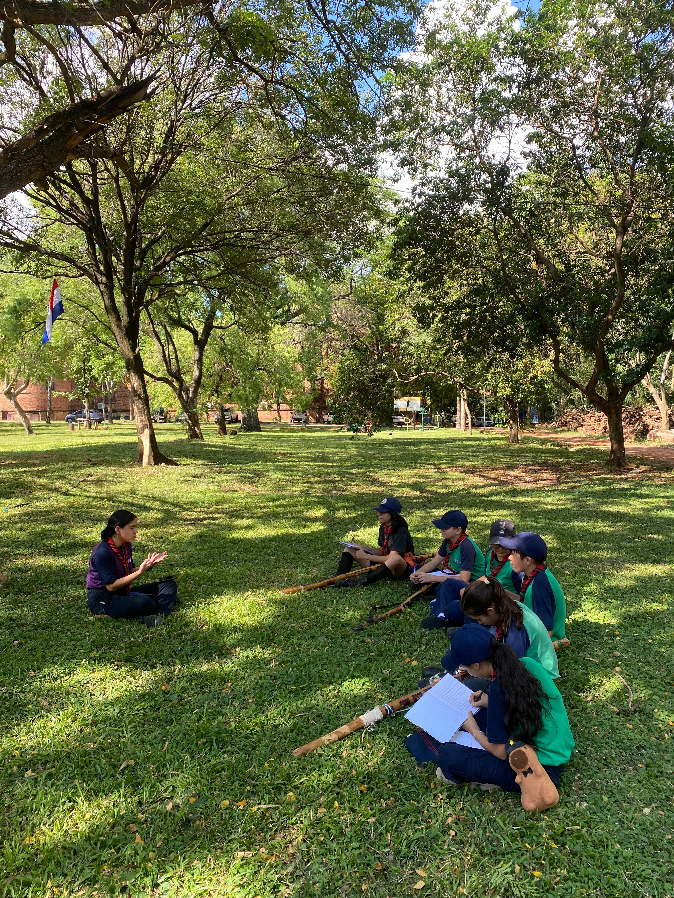
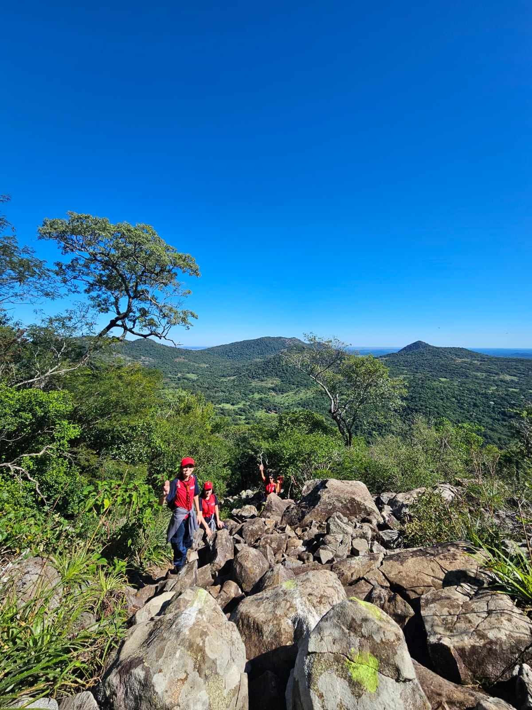
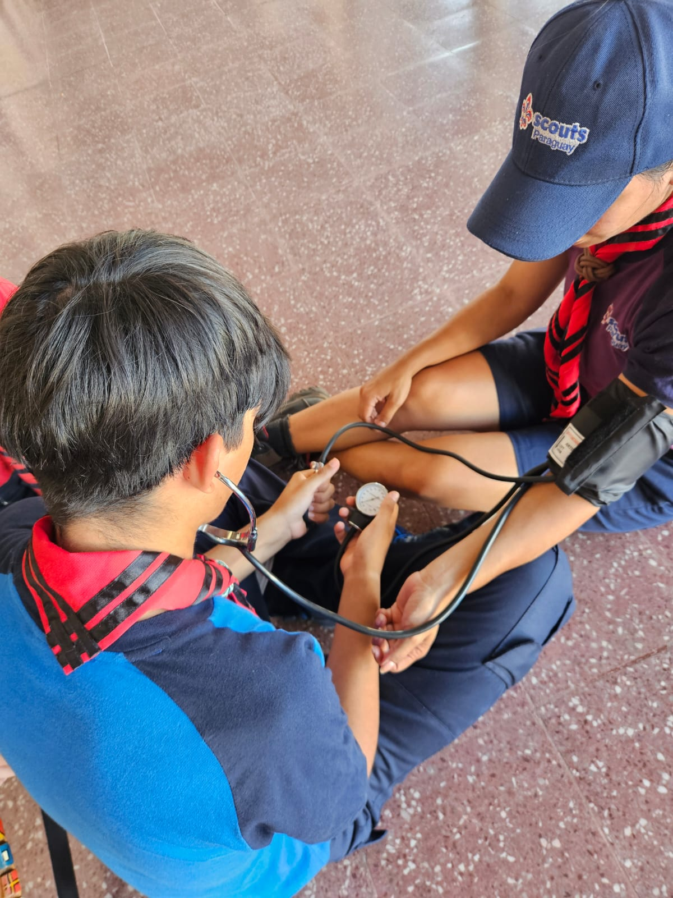
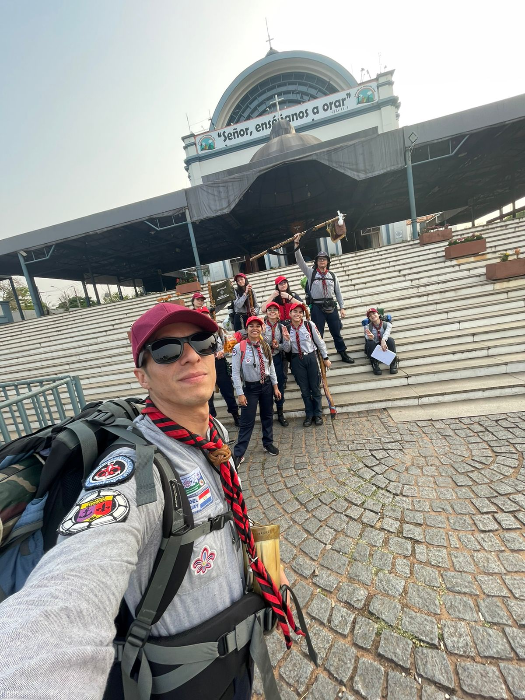
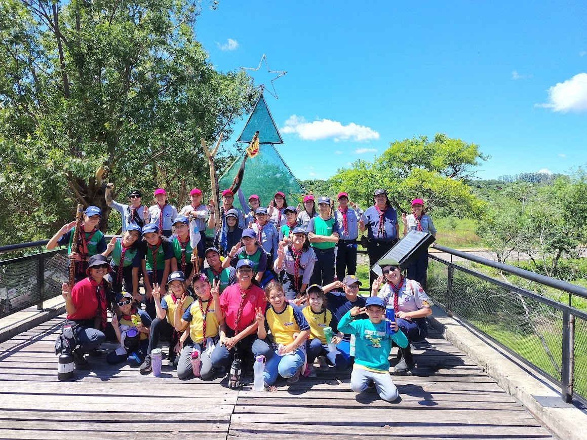
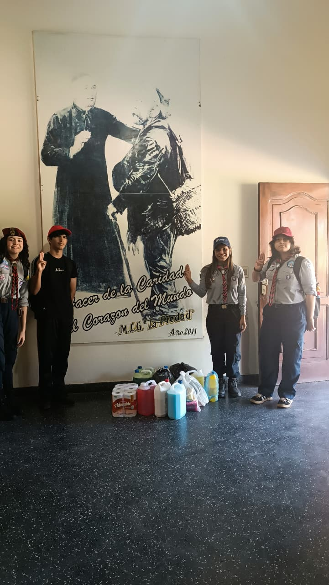
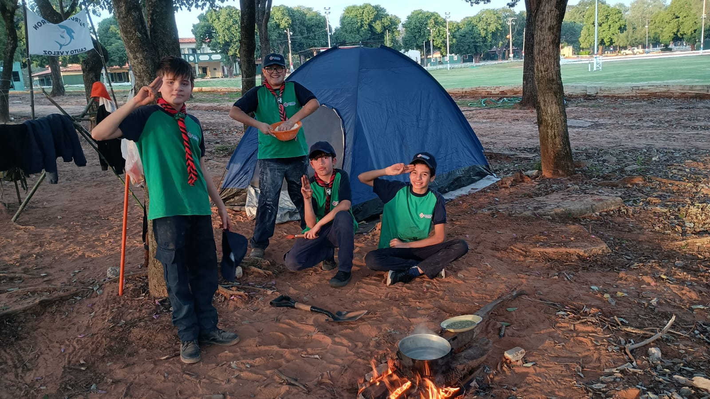
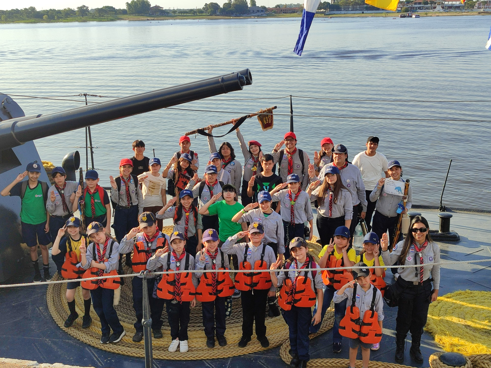

¿Qué hacen los scouts?
Nuestras actividades combinan aprendizaje, aventura y servicio, con el objetivo de desarrollar habilidades, liderazgo y valores en cada miembro.









Experiencias que transforman
A través de distintas experiencias educativas y recreativas, promovemos el crecimiento personal, el trabajo en equipo y el compromiso con la comunidad.
- ▸ Campamentos y Excursiones - Contacto con la naturaleza y trabajo en equipo
- ▸ Juegos y Dinámicas - Desarrollo de habilidades sociales y diversión
- ▸ Proyectos Comunitarios - Responsabilidad social y servicio
- ▸ Construcciones y Manualidades - Creatividad y trabajo práctico
- ▸ Educación para la Salud - Bienestar integral
A través de estas experiencias, nuestros scouts desarrollan liderazgo, responsabilidad, creatividad y valores que los acompañarán durante toda su vida.


 Lorena Amarilla - Jefa de Grupo
Lorena Amarilla - Jefa de Grupo